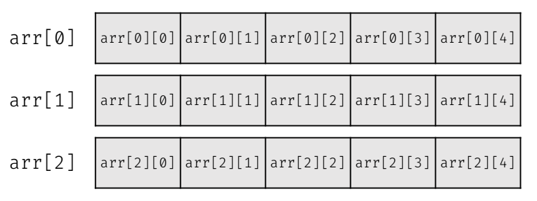
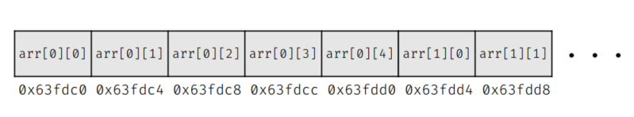
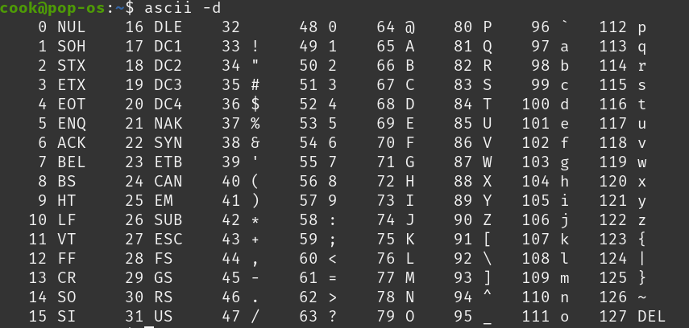

指標與字串
作者: D1stance
指標
一個一般的變數有名稱、型態、值。
如果現在有三個變數：
int i = 5;
double d = 3.14;
bool b = true;
| 名稱 | 型態 | 值 |
|---|---|---|
| i | int | 5 |
| d | double | 3.14 |
| b | bool | true |
這些變數都會放在記憶體的某個位置，我們會稱這些位置為「位址」。
| 名稱 | 型態 | 位址 | 值 |
|---|---|---|---|
| i | int | 0x7ffdfb8c | 5 |
| d | double | 0x7ffdfb90 | 3.14 |
| b | bool | 0x7ffdfb98 | true |
這個變數位址我們會用一個十六進位的數字來表示。
十六進位
十六進位是以 16 為基數的數字系統，使用 0-9 和 A-F 來表示數字。
- 0-9 表示數字 0 到 9
- A 表示 10
- B 表示 11
- C 表示 12
- D 表示 13
- E 表示 14
- F 表示 15
當一個數字有前綴 0x 時，表示這個數字是十六進位的。
剛才變數 i 的位址 0x7ffdfb8c，就是一個十六進位的數字，
因為一個 int 變數佔有 4 個位元組 (Bytes)，
所以 0x7ffdfb8c 這個位址的下一個變數的位址是 0x7ffdfb90，
而 0x7ffdfb90 的下一個變數的位址是 0x7ffdfb98，
這是因為 double 佔有 8 個位元組。
指標
指標是一種特別的變數，用來儲存其他變數的位址。
我們可以宣告一個指標變數來儲存 i 的位址：
int *ptr = &i;
* 表示這是一個指標變數，
這裡的 & 運算子是取位址運算子，它會返回變數 i 的位址，
指標變數 ptr 的型態是 int*，表示它是一個指向 int 型態的指標，
指標變數 ptr 現在儲存了 i 的位址 0x7ffdfb8c。
| 名稱 | 型態 | 位址 | 值 |
|---|---|---|---|
| i | int | 0x7ffdfb8c | 5 |
| ptr | int* | 0x7ffdfb99 | 0x7ffdfb8c |
指標有以下這幾種宣告的方式：
int *ptr;
int* ptr;
int * ptr;
這三種方式都是合法的，指標的型態是 int*，而 ptr 是指標變數的名稱，
如果有多個指標變數，可以這樣宣告：
int *ptr1, *ptr2, *ptr3;
你會發現，* 會出現在每個指標變數的前面，所以通常而言用第一種宣告方式會比較清楚。
如果你寫成這樣
int *ptr1, ptr2, ptr3;
這樣的話，ptr1 是一個指標變數，而 ptr2 和 ptr3 是一般的 int 變數。
而取位址運算子 & 也可以單獨使用，不一定要搭配指標：
int i = 5;
cout << (&i) << '\n'; // 這樣會輸出 i 的位址
間接運算子 *
間接運算子 * 用來取得指標所指向的變數的值，也可以用它來實際更改指標所指向的變數的值。
int i = 5;
int *ptr = &i;
cout << *ptr << '\n'; // 這樣會輸出 i 的值 5
*ptr = 10; // 這樣會把 i 的值改成 10
cout << i << '\n'; // 這樣會輸出 i 的值 10
一般而言，我們複製變數之後，修改被複製的變數不會影響原本的變數，
int a = 5;
int b = a; // 複製 a 的值到 b
b = 10; // 修改 b 的值
cout << a << '\n'; // 這樣會輸出 a 的值 5
但如果我們使用指標，因為紀錄的是變數實際上在記憶體中的位址， 所以我們是直接對記憶體進行操作， 這樣就可以直接修改原本的變數。
我們也可以結合取址運算子 & 和間接運算子 * 來做操作：
int num = 10;
*(&num) = 20; // 這樣會把 num 的值改成 20
cout << num << '\n'; // 這樣會輸出 num 的值 20
雙重指標
既然指標是用來儲存其他變數的位址，那麼指標本身也可以有自己的位址， 所以指向指標的地址的變數就是雙重指標。
int i = 5;
int *ptr = &i; // ptr 是指向 i 的指標
int **dptr = &ptr; // dptr 是指向 ptr 的雙重指標
| 名稱 | 型態 | 位址 | 值 |
|---|---|---|---|
| i | int | 0x7ffdfb8c | 5 |
| ptr | int* | 0x7ffdfb99 | 0x7ffdfb8c |
| dptr | int** | 0x7ffdfb9d | 0x7ffdfb99 |
多重指標的口訣
在很多 * 疊加下，你可能會分不清楚現在操作的對象究竟是一個值還是一個位址，
這裡筆者提供一個競程創隊元老壯滋學長的口訣：
- 把宣告時的型態補在前面
- 剩下的部分就是遮起來的部分之值
這樣可能有點模糊，我們提供一個例子幫助理解：
int i = 5;
int *ptr = &i; // ptr 是指向 i 的指標
int **dptr = &ptr; // dptr 是指向 ptr 的雙重指標
int ***tptr = &dptr; // tptr 是指向 dptr 的三重指標
int ****fptr = &tptr; // fptr 是指向 tptr 的四重指標
現在有一個操作的對象是 *fptr，我們可以這樣理解：
先把原本的 int **** 的型態寫上去，
變成 int ****fptr 你想知道 *fptr 的值是什麼，
就把 *fptr 遮起來，剩下的部分是 int ***，所以 *fptr 的值是 int *** 的值，也就是 tptr 的值。
參考 Reference &
參考是一個 C++ 特有的概念，有點像是幫變數創造一個別名，
這樣就可以用別名來操作原本的變數，
參考的宣告方式是使用 & 符號：
int i = 5;
int &ref = i; // ref 是 i 的參考
ref = 10; // 這樣會把 i 的值改成 10
cout << i << '\n'; // 這樣會輸出 i 的值 10
參考有幾個特點：
- 參考宣告時一定要指定一個已經存在的變數，不能宣告一個沒有初始值的參考。
- 宣告後不能修改指定的變數，參考一旦與變數綁定，就不能再改變。
- 參考不佔用額外的記憶體空間，它只是原變數的別名。
取址運算子 & | 參考 & |
|---|---|
| 用來取得變數的位址 | 用來創建變數的別名 |
只有宣告的時候在型態加上的 & 是參考，其他地方的 & 都是取址運算子。
小練習
int a = 10;
int b = 5;
int *c = &a;
b += *c;
*c = 12;
cout << a << " " << b << '\n';
答案
12 15陣列與指標
當我們宣告了一個陣列 int arr[5];，
這個陣列的名稱 arr 在大部分的時候除了代表陣列以外，有時也會轉型為指向陣列第一個元素的指標。
這意味著 arr 可以被視為一個指向 int 的指標，指向陣列的第一個元素。
如果你對 arr 使用取址運算子 &，你會得到陣列的位址：
int arr[5] = {1, 2, 3, 4, 5};
cout << arr << '\n'; // 這樣會輸出陣列的位址
cout << &arr << '\n'; // 這樣也會輸出陣列的位址
這兩個輸出是相同的，因為 arr 和 &arr 都指向陣列的第一個元素。
不過，陣列的名稱 arr 並不是一個指標變數，它不能被重新指派到其他位址。
如果你對 arr + 1 使用取址運算子 &，你會得到陣列第二個元素的位址：
cout << (arr + 1) << '\n'; // 這樣會輸出陣列第二個元素的位址
這是因為 arr + 1 會指向陣列的第二個元素，這個位址是 arr 的位址加上 sizeof(int) 的大小。
如果你想要取得陣列的第一個元素的值，可以使用間接運算子 *：
cout << *arr << '\n'; // 這樣會輸出陣列第一個元素的值
如果你想要取得陣列的第二個元素的值，可以使用 *(arr + 1)：
cout << *(arr + 1) << '\n'; // 這樣會輸出陣列第二個元素的值
以此類推，因此 arr[i] 可以被視為 *(arr + i)。
那麼二維陣列呢?
假設我們有一個二維陣列 arr[3][5]，這個陣列有 3 行 5 列。

二維陣列其實在記憶體中是連續存放的，

因此，這時候 arr 的第一個元素，會是一個長度為 5 的一維陣列 arr[0]，
而 arr[0] 的第一個元素 arr[0][0] 會是 arr[0] 的第一個元素。
所以我們可以推出下列的關係：
arr[i][j]
== *(*(arr + i) + j)
== *(*(&arr[i]) + j)
== *(arr[i] + j)
== *(&arr[i][j])
練習題
第一題
#include<bits/stdc++.h>
using namespace std;
int main(){
int a;
int *b;
a = 4;
b = &a;
cout << ++*b << " " << a;
}
答案
5 5第二題
#include<bits/stdc++.h>
using namespace std;
int main(){
int a = 1;
int *b, *c;
b = &a;
c = &a;
*b = 2;
*c = 3;
cout << a;
}
答案
3第三題
#include<bits/stdc++.h>
using namespace std;
int main(){
int a = 10;
int b = 5;
int *c = &a;
int **d = &c;
*c = 8;
*d = &b;
*c = 12;
*d = &a;
**d -= 2;
cout << a << " " << b;
}
答案
6 12字元與字串
字元
字元是一種用來儲存語言資料 (字母、數字、符號等) 的資料型態， 佔有 1 個位元組 (Byte)，每個字元都有一個對應的 ASCII 碼。 例如，字母 'A' 的 ASCII 碼是 65，'B' 的 ASCII 碼是 66。

在上表中，0 ~ 31 和 127 是不可顯示的控制字元， 而 32 ~ 126 是可顯示的字元。
我們可以使用標準輸出入流來輸出字元：
#include <iostream>
using namespace std;
int main()
{
char c = 'A'; // 宣告一個字元變數 c
cout << c << '\n'; // 輸出字元 c
cout << (int)c << '\n'; // 輸出字元 c 的 ASCII 碼
char d;
cin >> d; // 從標準輸入讀取一個字元
cout << d << '\n'; // 輸出讀取的字元
cout << (int)d << '\n'; // 輸出讀取的字元的 ASCII 碼
return 0;
}
因為字元本身其實就是數字，所以也可以用來做基礎的加減和比較運算：
#include <iostream>
using namespace std;
int main()
{
char c = 'A';
cout << c + 1 << '\n'; // 輸出 'B'
cout << c - 1 << '\n'; // 輸出 '@'
cout << c < 'B' << '\n'; // 輸出 1 (true)
cout << c > 'B' << '\n'; // 輸出 0 (false)
return 0;
}
cctype
C++ 提供了一些函式來處理字元，這些函式定義在 <cctype> 標頭檔中。
這些函式可以用來檢查字元的類型，例如是否為數字、字母、空白等。
isdigit(c) // 檢查 c 是否為數字
isalpha(c) // 檢查 c 是否為字母
isspace(c) // 檢查 c 是否為空白字元
islower(c) // 檢查 c 是否為小寫字母
isupper(c) // 檢查 c 是否為大寫字母
// 下列兩個函式用來轉換字元的大小寫，會回傳 ASCII 碼
tolower(c) // 將 c 轉換為小寫字母
toupper(c) // 將 c 轉換為大寫字母
範例
#include <iostream>
#include <cctype>
using namespace std;
int main()
{
cout << isdigit('5') << '\n'; // 1 (true)
cout << isalpha('A') << '\n'; // 1 (true)
cout << toupper('a') << '\n'; // 65
return 0;
}
字串
字元陣列
字串其實就是很多的字，那麼就會是一個字元陣列， 我們可以這樣宣告一個字元陣列：
char str[6] = "Hello"; // 字串長度為 5，最後一個字元是 '\0'
特別的是，字元陣列最後需要有一個特殊的字元 '\0'，這個字元稱為「字串結束符號」，用來標記字串的結尾。
這樣我們就可以用 cout 輸出字串：
#include <iostream>
using namespace std;
int main()
{
char str[6] = "Hello"; // 字串長度為 5，最後一個字元是 '\0'
cout << str << '\n'; // 輸出字串
return 0;
}
這裡有一個問題是，如果我們宣告的字元陣列長度不夠，
那麼可能會輸出奇怪的結果，因為沒有足夠的空間來存放 '\0'。
fgets
一般的 cin 只能讀取到空白字元為止，空白後的字串就會被視為新的輸入或者被忽略，
如果我們想要讀取包含空白的字串，可以使用 fgets 函式：
#include <iostream>
#include <cstdio> // 包含 fgets 函式
using namespace std;
int main()
{
char str[100]; // 宣告一個字元陣列
fgets(str, 10, stdin); // 從標準輸入讀取字串
cout << str; // 輸出字串
return 0;
}
要注意的事情是，第二個參數是字元陣列的大小，
還有不能跟 cin 一起使用，
因為 cin 會清除緩衝區中的換行字元。
以及他會把讀到的換行字元 \n 也包含在字串中，
如果不想要換行字元，可以在輸出前手動去掉：
str[strlen(str) - 1] = '\0'; // 去掉最後的換行字元
strlen 是一個 <cstring> 標頭檔中的函式，用來計算字串的長度，
回傳值不包含結束符號 '\0'。
cstring 標頭檔還提供了其他一些有用的函式來處理字串，例如：
strcpy用來複製字串strcat用來連接字串strcmp用來比較字串
首先講回 strlen，他有點像是你想知道一本書的頁數，
就從第一頁開始數，直到最後一頁的結束符號，
這樣就可以知道這本書有多少頁。
所以不建議放在迴圈中的判斷式，可能會造成超時。
#include <iostream>
#include <cstring> // 包含 strlen 函式
using namespace std;
int main()
{
char str[100]; // 宣告一個字元陣列
cin >> str;
for(int i = 0; i < strlen(str); i++) // 使用 strlen 計算字串長度
cout << str[i] << " "; // 輸出每個字元
cout << '\n';
上面這個就是一個不好的範例，因為 strlen 會在每次迴圈中都計算一次字串長度，
這樣會造成不必要的計算，尤其是當字串很長時，會影響效能。
因此，建議在迴圈外先計算一次字串長度，然後在迴圈中使用這個長度：
#include <iostream>
#include <cstring> // 包含 strlen 函式
using namespace std;
int main()
{
char str[100]; // 宣告一個字元陣列
cin >> str;
int len = strlen(str); // 在迴圈外計算一次字串長度
for(int i = 0; i < len; i++) // 使用計算好的長度
cout << str[i] << " "; // 輸出每個字元
cout << '\n';
}
畢竟字串長度不會改變，所以只需要計算一次就可以了。
strcpy
strcpy 用來複製字串，語法如下：
char *strcpy(char *dest, const char *src);
dest 是目標字串，src 是來源字串，這個函式會把 src 的內容複製到 dest 中。
#include <iostream>
#include <cstring> // 包含 strcpy 函式
using namespace std;
int main()
{
char str1[100] = "Hello"; // 來源字串
char str2[100]; // 目標字串
strcpy(str2, str1); // 複製 str1 到 str2
cout << str2 << '\n'; // 輸出目標字串
return 0;
}
但要注意的事情是，strcpy 不會檢查目標字串的大小，
如果目標字串的大小不夠，可能會導致緩衝區溢位 (Buffer Overflow)，
簡單來說就是目標字串的空間不夠大，會導致寫入超出範圍的記憶體。
因此在使用 strcpy 時，必須確保目標字串有足夠的空間來存放來源字串。
strcat
strcat 用來連接兩個字串，語法如下：
char *strcat(char *dest, const char *src);
dest 是目標字串，src 是來源字串，這個函式會把 src 的內容連接到 dest 的末尾。
#include <iostream>
#include <cstring> // 包含 strcat 函式
using namespace std;
int main()
{
char str1[100] = "Hello"; // 來源字串
char str2[100] = " World"; // 目標字串
strcat(str1, str2); // 將 str2 連接到 str1
cout << str1 << '\n'; // 輸出連接後的字串
return 0;
}
跟 strcpy 一樣，strcat 也不會檢查目標字串的大小，
如果目標字串的大小不夠，可能會導致緩衝區溢位 (Buffer Overflow)。
strcmp
strcmp 用來比較兩個字串，語法如下：
int strcmp(const char *str1, const char *str2);
str1 和 str2 是要比較的兩個字串，這個函式會返回一個整數值，
- 如果
str1小於str2，則返回負值 - 如果
str1等於str2，則返回 0 - 如果
str1大於str2，則返回正值
這個函數會從第一個字元開始一一比較，
直到遇到不同的字元或是結束符號 '\0' 為止。
比較的結果是根據字元的 ASCII 碼來決定的，
假設一樣都是小寫，則照 a 到 z 的順序比較，
如果一個大寫一個小寫，則大寫會被視為小於小寫，
這種順序又被稱為 字典序 (Lexicographical Order)。
C++ 字串類別
Character array 比較像是 C 語言的做法，
C++ 提供了一個更方便的字串類別 std::string，
這個類別提供了許多方便的函式來處理字串。
我們有以下幾種宣告 std::string 的方式：
string str1; // 宣告一個空的字串
string str2 = "Hello"; // 宣告並初始化字串
string str3("World"); // 使用括號初始化字串
string str4 = str2; // 複製字串
string str5 = char_array; // 從字元陣列初始化字串
輸入和輸出字串可以直接使用 cin 和 cout：
#include <iostream>
#include <string> // 包含 string 類別
using namespace std;
int main()
{
string str; // 宣告一個字串變數
cin >> str; // 從標準輸入讀取字串
cout << str << '\n'; // 輸出字串
return 0;
}
一樣的問題，cin 會在遇到空白字元時停止讀取，
如果想要讀取包含空白的字串，可以使用 getline 函式：
#include <iostream>
#include <string> // 包含 string 類別
using namespace std;
int main()
{
string str; // 宣告一個字串變數
getline(cin, str); // 從標準輸入讀取包含空白的字串
cout << str << '\n'; // 輸出字串
return 0;
}
getline 會讀取整行輸入，直到遇到換行字元為止，
不同的於 fgets，getline 不會包含換行字元，
特別的是，我們也可以調整他要遇到什麼字元才停止讀取：
#include <iostream>
#include <string> // 包含 string 類別
using namespace std;
int main()
{
string str; // 宣告一個字串變數
getline(cin, str, ','); // 從標準輸入讀取字串，直到遇到逗號為止
cout << str << '\n'; // 輸出字串
return 0;
}
這樣就可以讀取到逗號前的字串。
而且不需要指定字串的大小，因為 std::string 會自動管理記憶體。
cin.ignore
在使用 getline 之前，如果之前有使用過 cin，
這樣可能會導致 getline 讀取到換行字元，
這是因為 cin 不會讀取空白跟換行字元，
所以如果之前有使用過 cin，那麼緩衝區中可能還有換行字元。
為了解決這個問題，我們可以使用 cin.ignore() 函式來忽略緩衝區中的換行字元：
#include <iostream>
#include <string> // 包含 string 類別
using namespace std;
int main()
{
int n; // 宣告一個整數變數
cin >> n; // 從標準輸入讀取整數
cin.ignore(); // 忽略緩衝區中的換行字元
for(int i = 0; i < n; ++i)
{
string str; // 宣告一個字串變數
getline(cin, str); // 從標準輸入讀取包含空白的字串
cout << str << '\n'; // 輸出字串
}
}
這樣就可以正確地讀取包含空白的字串了。
std::string 提供了許多方便的函式來處理字串，例如：
length()或size()：返回字串的長度empty()：檢查字串是否為空clear()：清空字串append()或+=：連接字串
更多函式可以參考 C++ Reference。
不同於 strlen，std::string 的長度可以直接使用 length() 或 size() 函式來取得，而且它是早就記錄好的值，因此不會有一直翻書的問題。
字串與數字的轉換
如果現在你有一個數字字串，想要把它轉換成整數或浮點數，
你字串是 char array 的話，可以使用 atoi 或 atof 函式：
#include <iostream>
#include <cstdlib> // 包含 atoi 和 atof 函式
using namespace std;
int main()
{
char str[] = "123"; // 數字字串
int num = atoi(str); // 將字串轉換為整數
cout << num << '\n'; // 輸出整數
double dnum = atof(str); // 將字串轉換為浮點數
cout << dnum << '\n'; // 輸出浮點數
return 0;
}
如果你使用 std::string，可以使用 stoi 或 stod 函式：
#include <iostream>
#include <string> // 包含 string 類別
using namespace std;
int main()
{
string str = "123"; // 數字字串
int num = stoi(str); // 將字串轉換為整數
cout << num << '\n'; // 輸出整數
double dnum = stod(str); // 將字串轉換為浮點數
cout << dnum << '\n'; // 輸出浮點數
return 0;
}
這些函式會自動處理字串中的空白字元和其他非數字字元。
Stringstream
字串流是 C++ 獨有的強大工具，
可以用來在字串和其他資料型態之間進行轉換，
它定義在 <sstream> 標頭檔中。
字串流可以用來讀取和寫入字串，就像使用 cin 和 cout 一樣，
但它是針對字串進行操作，而不是標準輸入輸出。
#include <iostream>
#include <sstream> // 包含 stringstream 類別
using namespace std;
int main()
{
string str = "123 456 789"; // 數字字串
stringstream ss(str); // 建立字串流
int num;
while(ss >> num) // 從字串流讀取整數
cout << num << '\n'; // 輸出整數
return 0;
}
上面的程式碼會將字串中的數字分別讀取出來， 並輸出每個數字。
字串流也可以用來將其他資料型態轉換為字串：
#include <iostream>
#include <sstream> // 包含 stringstream 類別
using namespace std;
int main()
{
int num = 123; // 整數
stringstream ss; // 建立字串流
ss << num; // 將整數寫入字串流
string str = ss.str(); // 從字串流取得字串
cout << str << '\n'; // 輸出字串
return 0;
}
stringstream 如果需要清空，需要同時使用 str("") 和 clear()：
#include <iostream>
#include <sstream> // 包含 stringstream 類別
using namespace std;
int main()
{
stringstream ss; // 建立字串流
ss << "Hello, World!"; // 寫入字串
cout << ss.str() << '\n'; // 輸出字串
ss.str(""); // 清空字串流的內容
ss.clear(); // 清除錯誤狀態
cout << "After clearing: " << ss.str() << '\n'; // 輸出清空後的字串
return 0;
}
小結
在這一章中，我們學習了 C++ 中的指標、參考、字元和字串的基本概念，
以及如何使用指標和參考來操作變數的位址。
我們還學習了如何使用字串類別 std::string 來處理字串，
以及如何使用字串流 stringstream 來在字串和其他資料型態之間進行轉換。
這些概念在 C++ 中非常重要，因為它們可以幫助我們更有效地管理記憶體和處理資料。